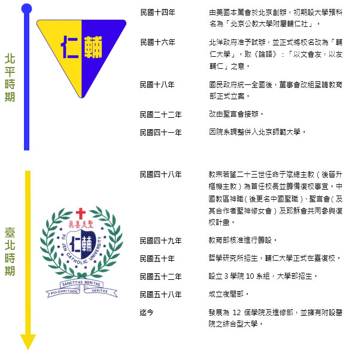

參考自輔大校網
歷史沿革
輔仁大學創校於民國十四年（1925年），在臺復校於民國五十年（1961年）【立案公文：教育部令(台50高12039號) 】
【今年（2021）校慶為輔仁大學創校96週年及在臺復校60週年】。
自准復校迄110學年度，計有12個學院及進修部：51個日間學士班、49個碩士班、23個碩士在職專班、12個博士班、18個進修學士班及1個二年制在職專班。專任教師近724人及專任職工457人(約聘122人)。在校學生近2萬5千人；校友人數：北平時期校友逾1萬2千人，在臺復校以來畢業校友近23萬人。